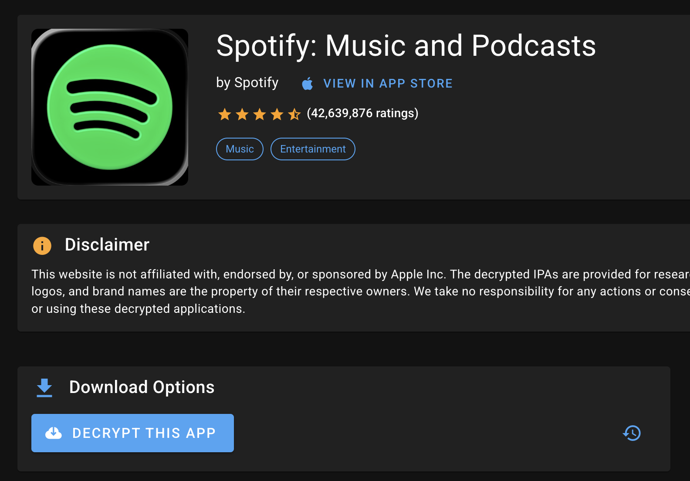

1
Get a decrypted Spotify IPA
An IPA is the iPhone app file you’ll add to the patcher.
- Open Spotify’s page on ArmConverter using the button below.
- Sign in with an iOSGods account. If you don’t have one, create one and follow ArmConverter’s own account and download tutorial.
- Click Decrypt this app. Follow the site’s prompts and wait for it to finish.
- Click Download IPA (or the download button shown) and save the decrypted .ipa file.
Use a Spotify version supported by your chosen mod. This guide was checked with Spotify 9.1.90.
Screenshot
